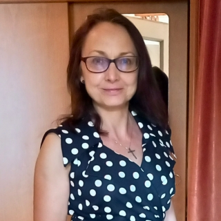

Get in Touch
Ready to start?
Ready to start?
We're here to help.
Our team is happy to answer any questions about programmes, admission requirements, student life, housing, and visas.

Mgr. Jana Nováková
English Study Programmes Administrator

Radmila Sejkotová
Doctoral Studies Administrator
Erasmus · Free-movers · Short-term studies
Office for International Relationsinternational@etf.cuni.cz